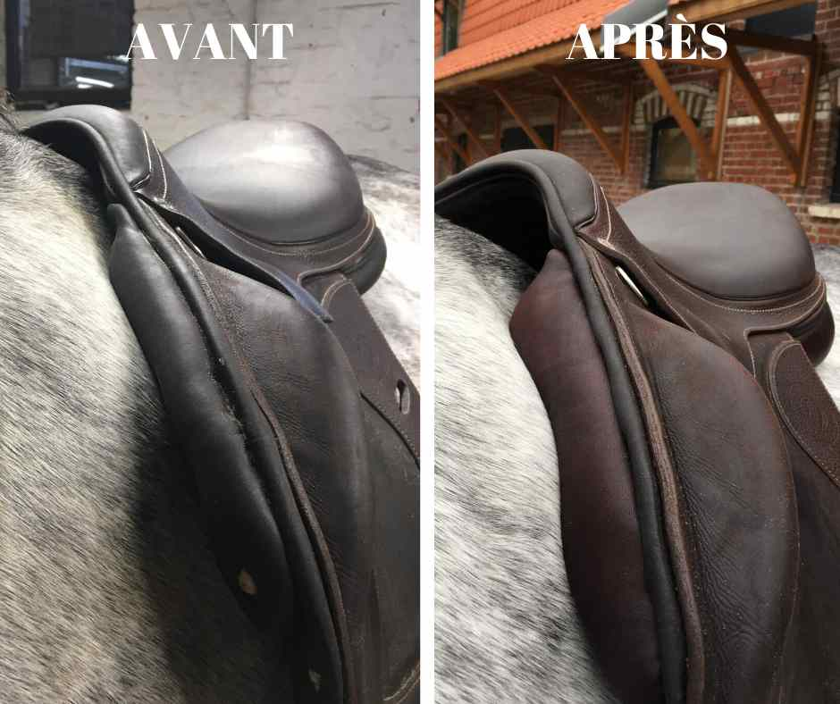
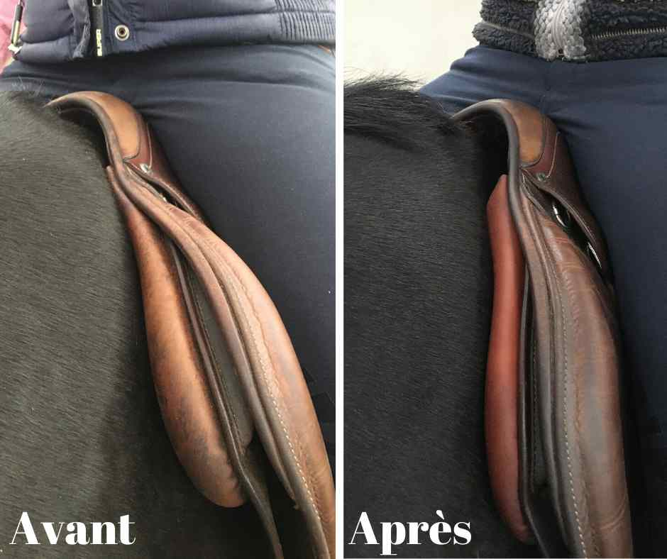
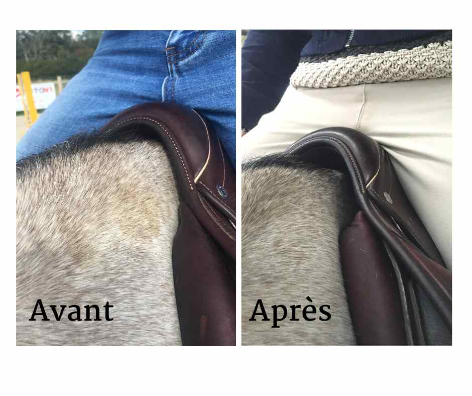
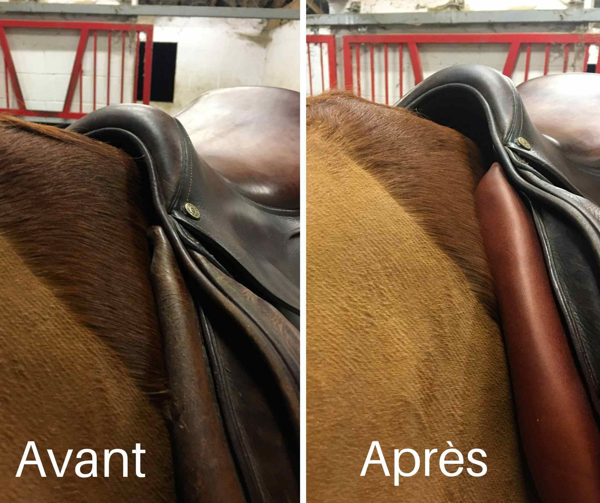

Modification
& adaptation de selle
Chaque intervention est unique, réalisée à la main dans l'atelier, adaptée à la morphologie de votre cheval.
Une selle qui s'adapte au cheval, pas l'inverse
La morphologie d'un cheval évolue constamment — avec l'âge, le travail, la musculature. Une selle parfaitement ajustée un jour peut devenir inadaptée quelques mois plus tard.
La modification de selle permet de corriger l'adéquation entre votre matériel existant et la morphologie actuelle de votre cheval, sans nécessairement investir dans une selle neuve.
Benjamin intervient directement dans son atelier, à la main, avec les techniques de sellerie traditionnelle transmises par les plus grands maîtres selliers.

Les étapes d'une intervention
Diagnostic sur place
Benjamin se déplace dans votre écurie pour évaluer l'adéquation entre votre selle et votre cheval.
Analyse & devis
Il identifie les points à corriger et vous propose les modifications adaptées avec un devis clair.
Travail en atelier
La selle est prise en charge et modifiée à la main dans l'atelier, avec les matériaux appropriés.
Vérification finale
La selle modifiée est replacée sur votre cheval pour vérifier le résultat et s'assurer du bon ajustement.
Avant / Après






Un travail artisanal, réalisé à la main
Formé par Jean-Luc Parisot, l'un des meilleurs Maîtres Selliers du monde, Benjamin maîtrise les techniques de sellerie traditionnelle dans leur intégralité.
Chaque modification est réalisée avec des matériaux de qualité, sélectionnés pour leur durabilité et leur compatibilité avec votre selle existante.
- Modification et refection des panneaux
- Réglage de l'arcade
- Correction de l'équilibre et de l'assiette
- Travail du cuir et des finitions
- Rembourrage et garnissage sur mesure
Votre selle nécessite une modification ?
Contactez Benjamin pour discuter de votre situation. Un simple échange suffit souvent à orienter vers la bonne solution.
Me contacter